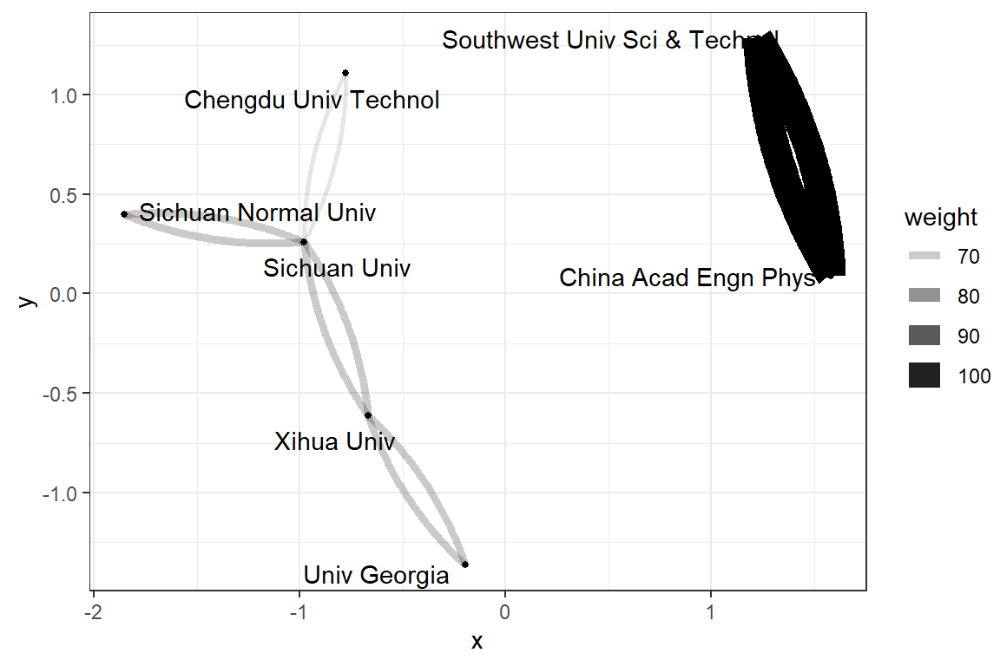

第 7 章 科研合作
看看我们的科研小圈子
7.1 机构匹配
需要用到强大的正则表达式
7.2 化学学科
我们就看看四川省的化学学科吧
Organ <- complete_set %>%
filter(Category_ESI == "CHEMISTRY") %>%
select(UT, C1) %>%
mutate(a = str_extract_all(C1, mc) ) %>%
unnest() %>%
#tidyr::extract(a, c("namelist", "organization"), "(\\[.*?\\])\\s+([^,]*),")
tidyr::extract(a, "Organization", "\\[.*?\\]\\s+([^,]*),")
head(Organ)library(widyr)
paper_org_pairs <- Organ %>%
pairwise_count(Organization, UT, sort = TRUE)
head(paper_org_pairs)links <- paper_org_pairs %>% select(item1, item2, n) %>%
filter(n >= 50) %>%
rename(from = item1, to = item2, weight = n)
linkslibrary(igraph)
library(ggraph)
links %>%
graph_from_data_frame(directed = F) %>%
ggraph(layout = 'kk') +
geom_edge_fan(aes(edge_alpha = weight, edge_width = weight)) +
geom_node_point(size = 1) +
geom_node_text(aes(label = name), repel = TRUE,
point.padding = unit(0.2, "lines")) 
7.3 全部学科
不过瘾吗？ 那我们就看看全局
Organize <- complete_set %>%
select(Category_ESI_cn, UT, C1) %>%
mutate(a = str_extract_all(C1, mc) ) %>%
unnest() %>%
#tidyr::extract(a, c("namelist", "organization"), "(\\[.*?\\])\\s+([^,]*),")
tidyr::extract(a, "Organization", "\\[.*?\\]\\s+([^,]*),")
head(Organize)library(widyr)
paper_organ_pairs <- Organize %>%
group_by(Category_ESI_cn) %>%
pairwise_count(Organization, UT, sort = TRUE, upper = FALSE)
head(paper_organ_pairs)linkss <- paper_organ_pairs %>%
select(item1, item2, n, Category_ESI_cn) %>%
filter(n >= 10) %>%
filter(Category_ESI_cn %in% c("物理学", "化学", "数学", "工程学", "计算机科学", "材料科学")) %>%
rename(from = item1, to = item2, weight = n)
linksslibrary(igraph)
library(ggraph)
linkss %>%
graph_from_data_frame(directed = F) %>%
ggraph(layout = 'kk') +
geom_edge_fan(aes(edge_alpha = weight,
edge_width = weight,
edge_colour = Category_ESI_cn)) +
geom_node_point(size = 1) +
geom_node_text(aes(label = name), repel = TRUE,
point.padding = unit(0.2, "lines")) +
theme_void() +
facet_wrap(~ Category_ESI_cn) 
7.4 看看某个学校的呢
蓝皮书的网络图
sicnu_organize <- sicnu_set %>%
select(Category_ESI_cn, UT, C1) %>%
mutate(a = str_extract_all(C1, mc) ) %>%
unnest() %>%
#tidyr::extract(a, c("namelist", "organization"), "(\\[.*?\\])\\s+([^,]*),")
tidyr::extract(a, "Organization", "\\[.*?\\]\\s+([^,]*),")
head(sicnu_organize)sicnu_organ_pairs <- sicnu_organize %>%
filter(!Organization %in% c("Sichuan Normal Univ")) %>%
count(Category_ESI_cn, Organization) %>%
arrange(desc(n))
head(sicnu_organ_pairs)library(tidygraph)
library(ggraph)
sicnu_organ_pairs %>%
rename(from = Category_ESI_cn, to = Organization, weight = n) %>%
filter( weight > 10 ) %>%
as_tbl_graph(directed = F) %>%
ggraph(layout = 'graphopt') +
geom_edge_link(aes(edge_alpha = weight,
edge_width = weight)) +
geom_node_point(size = 1) +
geom_node_text(aes(label = name), repel = TRUE,
point.padding = unit(0.2, "lines")) 
df_pairs <- sicnu_organ_pairs %>%
filter( !is.na(Category_ESI_cn) ) %>%
rename(from = Category_ESI_cn, to = Organization, weight = n) %>%
filter( weight > 4 ) library(googleVis)
draftsankey <- gvisSankey(df_pairs, from = "from", to = "to", weight = "weight",
options=list(height=1000, width=600,
sankey="{
link:{color:{fill: 'lightgray', fillOpacity: 0.7}},
node:{nodePadding: 5, label:{fontSize: 12}, interactivity: true, width: 20},
}")
)
plot(draftsankey)7.5 思考1
把发文量加进来，学院-学科-合作，这个有意思?
7.6 思考2
类似（NBA2015）4，学校类型- 学校 - 学科贡献。这个有意思。可能要调整数据集